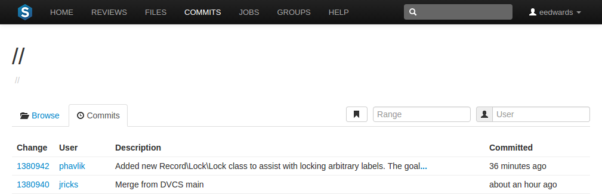
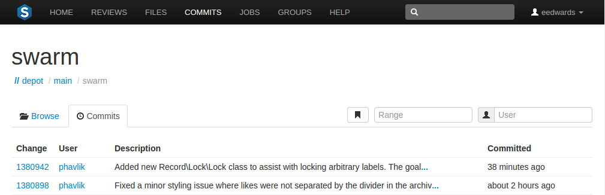
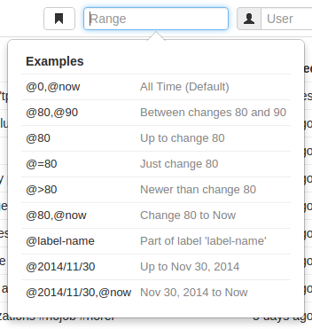
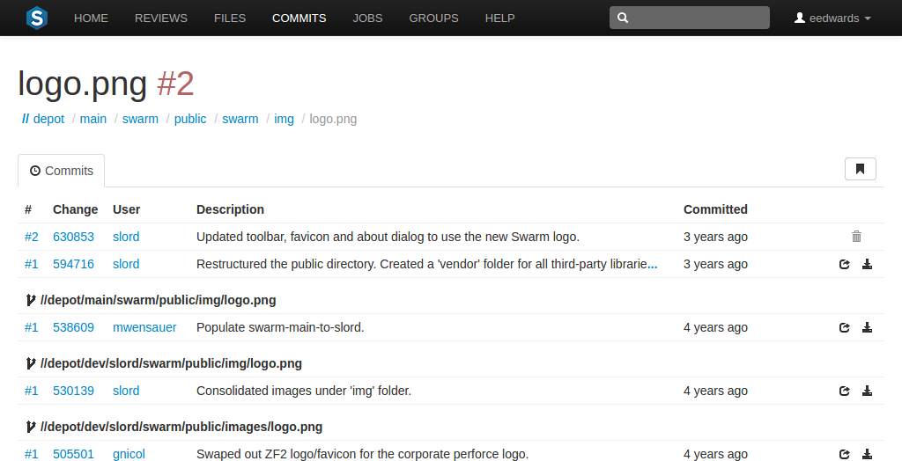
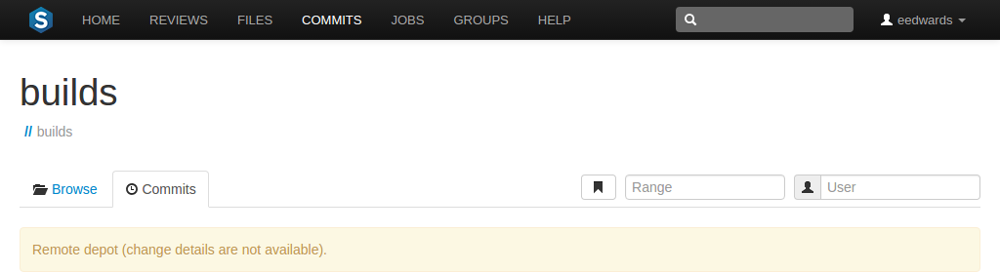

Commits
Whenever a new version of a file is checked into the Helix Versioning Engine, a commit record is created. Begin browsing the history of commits by clicking the link in the main toolbar.

When you are viewing a particular file or directory, clicking the tab displays the commits for that location in the depot.

Range filter
 The Range field lets you filter the list of changes for the depot path being viewed. When you click the Range field, a dropdown syntax guide appears providing sample commit filtering expressions.
The expressions that can be used within the Range field include:
-
@0,@now(the default): displays all commits for the current depot path. -
@80,@90: displays all changes between 80 and 90. -
@80: displays all changes up to change 80. -
@=80: displays only change 80. Change 80 might not involve the current depot path, so there may be no commits to display. -
@: any changes represented by labellabel-namelabel-name. -
@2014/11/30: displays all changes up to November 30, 2014. -
@2014/11/30,@now: displays all changes from November 30, 2014 to now.
File Commits
A file's commit history presents each version of a file that the Helix Versioning Engine knows about, including the change number, userid, change description, time ago, along with and buttons.

Swarm also displays contributing commits when available, such as when a file has been renamed, or integrated from another location in the Helix Versioning Engine.
If a commit represents a deleted revision, the and links are replaced with a trashcan icon to indicate that this version is no longer available.
Remote depot commits
When your Helix Versioning Engine has a remote depot configured, you can browse the contents of the remote depot, but remote depots do not share their commit history. If you attempt to view the commits of a file provided by a remote depot, Swarm displays:
